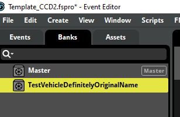
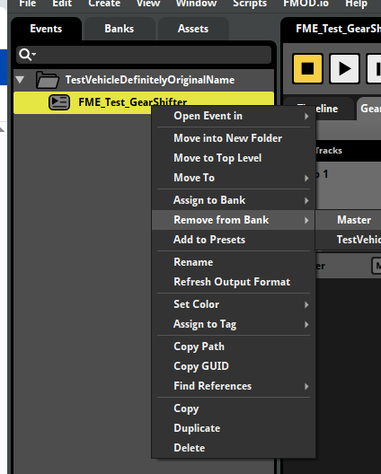
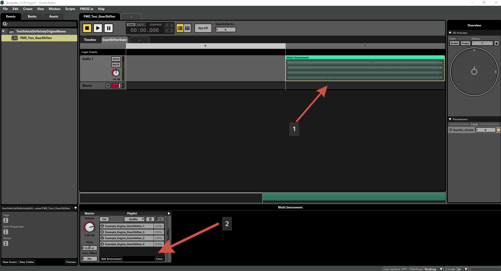
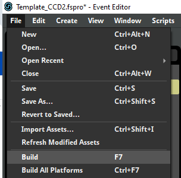
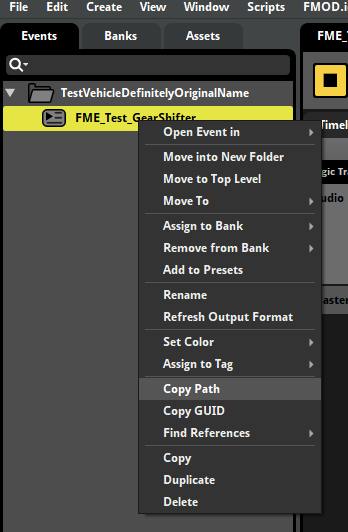
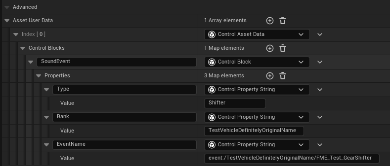

Навигация: README | 01. Минимальный автомобиль | 02. Экстерьер, свет и мир | 03. Салон, приборка и камеры | 04. Зеркала и дворники | 05. Звуки и FMOD | 06. Комплектации, логика и шпаргалка
В City Car Driving 2.0 предусмотрено 3 уровня работы со звуками автомобиля — вы сами выбираете, на каком остановиться:
| Уровень | Что нужно делать | Результат |
|---|---|---|
| 1. Базовый (по умолчанию) | Ничего не настраивать. | Автомобиль уже имеет стандартный набор звуков, но их пространственные точки (двигатель, переключатели, колёса) могут не совпадать с габаритами вашей модели. |
| 2. Настройка в UE | Расставить SceneComponent с ControlBlock SoundEvent в Акторе. |
Вы точно задаёте 3D-положение звуков, дистанцию затухания и можете выбрать любой готовый звук из стандартных автомобилей игры (например, другой звук двигателя или селектора КПП). |
| 3. Свои звуки (FMOD Studio) | Собрать собственный .bank и GUIDs.txt в FMOD Studio 2.03.14. |
Полностью уникальное звучание двигателя, клаксона, поворотников и любых других узлов вашего автомобиля. |
Настройка звуков в Акторе работает через тот же механизм ControlBlock, что и остальные компоненты. Если звучание и положение каких-то стандартных звуков вас уже устраивают — их можно просто пропустить.
V_<ИмяМода>SceneComponent (+ Add → Scene) и расположите его в нужной точке автомобиля (например, двигатель — под капотом, RainRoof — в центре крыши, Horn — за решёткой радиатора, Radio — в месте магнитолы).
Asset User Data → Control Asset Data → ControlBlock с именем SoundEvent.Properties:| Имя свойства | Тип | Обязательно? | Описание |
|---|---|---|---|
Type |
Control Property String |
Да | Тип аудиокомпонента (выбирается из таблицы в п. 1.2). Если указать только Type, вы просто перенесёте стандартный звук в точку этого SceneComponent. |
MinimumAttenuationDistance |
Control Property Float |
Нет | Минимальная дистанция затухания звука (если не указывать — берутся настройки из FMOD). |
MaximumAttenuationDistance |
Control Property Float |
Нет | Максимальная дистанция слышимости звука (если не указывать — берутся настройки из FMOD). |
Bank |
Control Property String |
Пара с EventName |
Имя звукового банка (для стандартных звуков игры — Master, для своих — имя вашего .bank без расширения). Указывается строго вместе с EventName! |
EventName |
Control Property String |
Пара с Bank |
Полный путь к FMOD-событию (например, event:/Vehicles/CarSounds/FME_RainRoof). Указывается строго вместе с Bank! |

Type, Bank и EventNameОбратите внимание на точное написание:
SuspentionSound_FR и SuspentionSound_FL пишутся через t (Suspention), а не s! Писать строго в таком виде.
Type |
Описание | Bank |
Доступные стандартные EventName |
|---|---|---|---|
EngineSound |
Звук двигателя | Master |
event:/Vehicles/UlgaresFolk/FME_UlgaresFolk_WholeEngineevent:/Vehicles/HangugEclauto/FME_HangugEclauto_WholeEngineevent:/Vehicles/UlgaresGroberolf/FME_UlgaresGroberolf_WholeEngine |
VehicleRoomTone |
Заполняющий фоновый звук пространства салона | Master |
event:/Vehicles/CarSounds/FME_VehicleRoomTone |
Shifter |
Рычаг переключения передач | Master |
event:/Vehicles/UlgaresFolk/FME_UlgaresFolk_Shifterevent:/Vehicles/HangugEclauto/FME_HangugEclauto_Shifter |
LightBeam |
Выключатель ближнего света | Master |
event:/Vehicles/CarSounds/FME_Handleevent:/Vehicles/CarSounds/FME_Click |
ParkingLight |
Выключатель габаритного света | Master |
event:/Vehicles/CarSounds/FME_Handleevent:/Vehicles/CarSounds/FME_Click |
FrontFogLights |
Выключатель передних противотуманных фар | Master |
event:/Vehicles/CarSounds/FME_Handleevent:/Vehicles/CarSounds/FME_Click |
RearFogLights |
Выключатель задних противотуманных фонарей | Master |
event:/Vehicles/CarSounds/FME_Handleevent:/Vehicles/CarSounds/FME_Click |
WipersHandle |
Переключатель дворников | Master |
event:/Vehicles/CarSounds/FME_Handleevent:/Vehicles/CarSounds/FME_Click |
Wipers |
Звук работы щёток дворников | Master |
event:/Vehicles/CarSounds/FME_Wipers |
TurningLightHandle |
Переключатель поворотников | Master |
event:/Vehicles/CarSounds/FME_TurningLightHandle |
TurningLightSignal |
Щелчки реле поворотников | Master |
event:/Vehicles/CarSounds/FME_TurningLightsSignal |
SafetyBelt |
Звук пристёгивания и отстёгивания ремня безопасности | Master |
event:/Vehicles/CarSounds/FME_SafetyBelt |
SafetyBeltWarning |
Звук предупреждения о непристёгнутом ремне (управляется в Vehicle.ini) |
Master |
event:/Vehicles/CarSounds/FME_SafetyBeltWarning |
ParkingBrake |
Звук ручного тормоза | Master |
event:/Vehicles/CarSounds/FME_ParkingBrake |
Horn |
Звуковой сигнал (гудок) | Master |
event:/Vehicles/CarSounds/FME_Horn |
RainWindow |
Звуки дождя по лобовому стеклу | Master |
event:/Vehicles/CarSounds/FME_RainWindow |
RainRoof |
Звуки дождя по крыше автомобиля | Master |
event:/Vehicles/CarSounds/FME_RainRoof |
Wind |
Аэродинамический шум ветра (с учётом скорости и поверхности) | Master |
event:/Vehicles/CarSounds/FME_Wind |
SuspentionSound_FR / SuspentionSound_FL |
Звуки ударов в переднюю правую / левую подвеску | Master |
event:/Vehicles/CarSounds/FME_SuspensionHit |
TiresSound_FR / TiresSound_FL |
Звуки шин на различных покрытиях (правое / левое колесо) | Master |
event:/Vehicles/CarSounds/FME_Tires |
Radio |
3D-позиция радиомагнитолы в салоне | (не указывать) | Отдельного FMOD-события нет — звук задаётся логикой игры. Укажите только Type = Radio (и при желании дистанции затухания). |
2.03.14 (версия важна для совместимости банков с игрой!).Template_CCD2 — чистый шаблонный проект, на базе которого вы будете собирать свой банк.Example_CCD2 — проект-справочник со всеми примерами событий, которые можно заменить.Никогда не собирайте свой мод напрямую внутри проекта Example_CCD2!
Используйте Example_CCD2 только как образец (смотреть используемые параметры, структуру и назначенные шины Bus). Всю рабочую сборку ведите исключительно в скопированном Template_CCD2, иначе возможны конфликты файлов с базовой игрой.
flowchart LR
F1["1. Копия Template_CCD2"] --> F2["2. Новый уникальный Bank"]
F2 --> F3["3. Событие + привязка к Bank + шина Mixer"]
F3 --> F4["4. Замена аудиоассетов"]
F4 --> F5["5. Build (F7) + Export GUIDs"]
F5 --> F6["6. Копирование в AudioBanks/<br/>и CopyPath в UE"]
Скопируйте папку Template_CCD2 в отдельную рабочую директорию и переименуйте проект под имя вашего мода (необязательно, но удобно). Откройте проект в FMOD Studio 2.03.14.
BankСоздайте новый Bank с максимально уникальным именем (например, по имени вашего мода: MyFirstCarBank), чтобы избежать конфликтов с другими модами. К этому банку будут привязаны все ваши события.


Example_CCD2Example_CCD2 и вставить в ваш проект — но обязательно дайте событию новое уникальное имя, отличное от примера.BankНазначьте созданное событие в ваш новый Bank (ПКМ по событию → Assign to Bank → <ВашBank>). Также уберите его привязку к банку Master (чтобы не перезаписывать базовые ресурсы).


Mixer / Bus)Чтобы в игре корректно работали ползунки громкости в настройках, откройте окно Mixer (Ctrl + 2) и перетащите ваше событие на ту же шину (Bus), на которой оно находилось в Example_CCD2. (При копировании из Example_CCD2 шина обычно подхватывается автоматически, но обязательно перепроверьте!)

Подготовьте свои .wav / .ogg аудиофайлы в любом аудиоредакторе.

Build)Нажмите F7 (или File → Build). Готовый файл <ВашBank>.bank появится в папке \Build\Desktop\ вашего проекта FMOD.

GUIDs.txtОбязательный шаг! В верхнем меню нажмите File → Export GUIDs. Файл GUIDs.txt появится в папке \Build\ вашего проекта FMOD.

Plugins\Mods\Content\<ИмяМода>\ и создайте подпапку AudioBanks (если её ещё нет).<ВашBank>.bank (из \Build\Desktop\)GUIDs.txt (из \Build\)Один мод — один Bank:
Лучше хранить все звуки одного автомобиля в одном общем банке. Если всё же используете несколько банков, объедините их файлы GUIDs.txt в один общий GUIDs.txt (главное, чтобы в нём присутствовали все строки со всеми вашими банками и событиями).
Copy Path.
V_<ИмяМода>, выберите нужный SceneComponent с ControlBlock SoundEvent и заполните:
Bank — имя вашего банка (без расширения .bank).EventName — вставьте скопированный путь (например, event:/MyFirstCar/FME_MyHorn).
.pakСохраните Актор (Compile → Save All) и соберите мод через build_mod_dlc.bat — скрипт автоматически упакует папку AudioBanks/ внутрь .pak.
Следующий шаг: переходите к Модулю 6. Комплектации, физика, кастомная логика и сводная шпаргалка, чтобы оформить карточку автомобиля, добавить выбор комплектаций и получить единый справочник всех настроек.